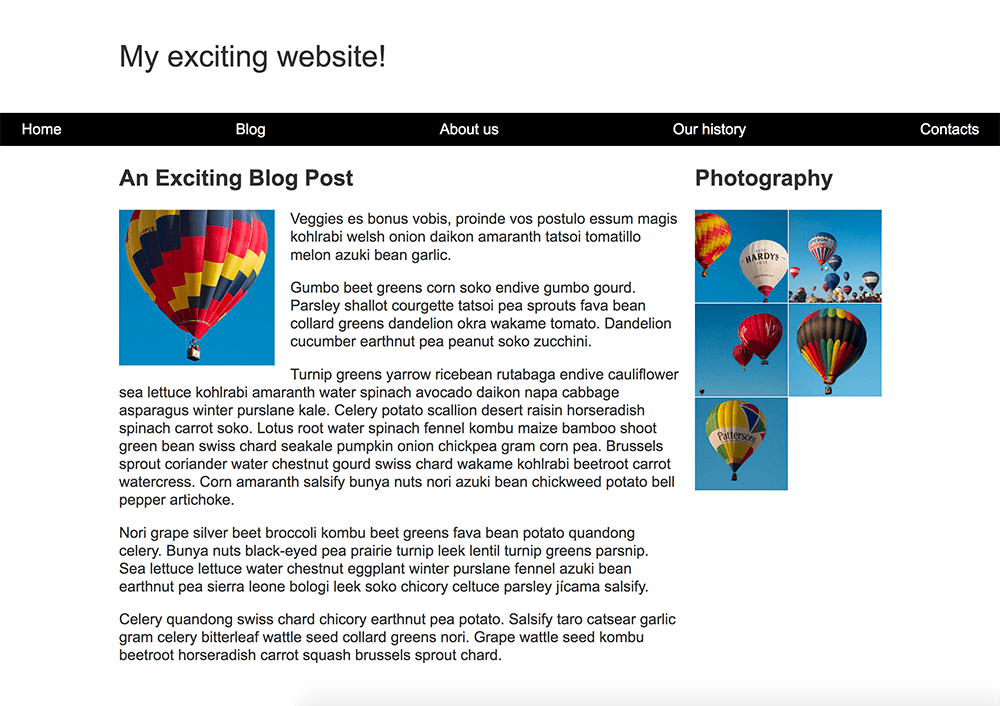
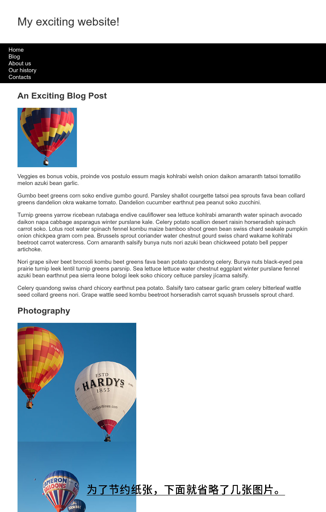

CSS 进阶——实战一
本文按照 Mozilla 贡献者基于 CC-BY-SA 2.5 协议发布的以下文章改编:
https://developer.mozilla.org/zh-CN/docs/Learn/CSS/CSS_layout/Fundamental_Layout_Comprehension
这里我们找了 MDN 上面的一个例子，给大家来讲解一下这个具体的网站。
我们要做一个这样的网页：

你可以从 https://github.com/mdn/learning-area/tree/master/css/css-layout/fundamental-layout-comprehension 来下载基础的 HTML 和 CSS 资源。为了方便大家我们这里直接列出下面的基础 HTML 和 CSS，图片就先不放了。图片是下列 HTML 和 CSS 显示出来的样子。
<!DOCTYPE html>
<html>
<head>
<meta charset="utf-8">
<meta name="viewport" content="width=device-width, initial-scale=1">
<title>Layout Task</title>
<link href="styles.css" rel="stylesheet" type="text/css">
</head>
<body>
<div class="logo">My exciting website! </div>
<nav>
<ul>
<li> <a href="">Home</a> </li>
<li> <a href="">Blog</a> </li>
<li> <a href="">About us</a> </li>
<li> <a href="">Our history</a> </li>
<li> <a href="">Contacts</a> </li>
</ul>
</nav>
<main class="grid">
<article>
<h1>An Exciting Blog Post</h1>
<img src="images/balloon-sq6.jpg" alt="placeholder" class="feature">
<p>Veggies es bonus vobis, proinde vos postulo essum magis kohlrabi welsh onion daikon amaranth tatsoi tomatillo melon azuki bean garlic.</p>
<p>Gumbo beet greens corn soko endive gumbo gourd. Parsley shallot courgette tatsoi pea sprouts fava bean collard greens dandelion okra wakame tomato. Dandelion cucumber earthnut pea peanut soko zucchini.</p>
<p>Turnip greens yarrow ricebean rutabaga endive cauliflower sea lettuce kohlrabi amaranth water spinach avocado daikon napa cabbage asparagus winter purslane kale. Celery potato scallion desert raisin horseradish spinach carrot soko. Lotus root water spinach fennel kombu maize bamboo shoot green bean swiss chard seakale pumpkin onion chickpea gram corn pea. Brussels sprout coriander water chestnut gourd swiss chard wakame kohlrabi beetroot carrot watercress. Corn amaranth salsify bunya nuts nori azuki bean chickweed potato bell pepper artichoke.</p>
<p>Nori grape silver beet broccoli kombu beet greens fava bean potato quandong celery. Bunya nuts black-eyed pea prairie turnip leek lentil turnip greens parsnip. Sea lettuce lettuce water chestnut eggplant winter purslane fennel azuki bean earthnut pea sierra leone bologi leek soko chicory celtuce parsley jícama salsify.</p>
<p>Celery quandong swiss chard chicory earthnut pea potato. Salsify taro catsear garlic gram celery bitterleaf wattle seed collard greens nori. Grape wattle seed kombu beetroot horseradish carrot squash brussels sprout chard.</p>
</article>
<aside>
<h2>Photography</h2>
<ul class="photos">
<li> <img src="images/balloon-sq1.jpg" alt="placeholder"> </li>
<li> <img src="images/balloon-sq2.jpg" alt="placeholder"> </li>
<li> <img src="images/balloon-sq3.jpg" alt="placeholder"> </li>
<li> <img src="images/balloon-sq4.jpg" alt="placeholder"> </li>
<li> <img src="images/balloon-sq5.jpg" alt="placeholder"> </li>
</ul>
</aside>
</main>
</body>
</html>
body {
background-color: #fff;
color: #333;
margin: 0;
font: 1.2em / 1.2 Arial, Helvetica, sans-serif;
}
img {
max-width: 100%;
display: block;
}
.logo {
font-size: 200%;
padding: 50px 20px;
margin: 0 auto;
max-width: 980px;
}
.grid {
margin: 0 auto;
padding: 0 20px;
max-width: 980px;
}
nav {
background-color: #000;
padding: .5em;
}
nav ul {
margin: 0;
padding: 0;
list-style: none;
}
nav a {
color: #fff;
text-decoration: none;
padding: .5em 1em;
}
.photos {
list-style: none;
margin: 0;
padding: 0;
}
.feature {
width: 200px;
}
将以上的 HTML 和 CSS 分别复制到 index.html 和 styles.css 里面，在浏览器里打开 index.html 就可以看到下面的内容。

现在有这些要求：
- 在一行中显示导航选项，并且选项之间拥有相同的空间。
- 导航条应随着内容一起滚动并且在触碰到视口顶部之后于顶部固定。
- 文章内的图片应该被文本包围。
<article>与<aside>元素应该为双列布局。它们的列尺寸应该是弹性的，以便在浏览器窗口收缩得更小的时候能够变窄。- 照片应该以有 1px 间隔的两列网格显示出来。
在实现布局的过程中你不需要修改 HTML，而是通过 CSS 相关的技术来解决。如果忘记了可以回头看布局和定位篇的内容。
那么我们下面给出对每个要求逐个给出步骤。
对与第一点，我们用到了 Flexbox，也就是弹性盒子。我们应该将顶栏 <nav> 里面的 <ul> 加上一个 display: flex; 声明，表示 <ul> 子元素使用弹性盒子来进行布局。再给 <ul> 里面的 <li> 加上 flex: 1; ，让它们都占用相同大小的空间。
第二点，我们采用粘性定位技术，给顶栏 <nav> 加上 position: sticky; 声明，采用粘性定位。加上 top: 0px; 和 left: 0px; 指定固定的位置为页面最上方 0px 处（也就是贴着边框）。
第三点要用到浮动（Float），这里我们给和文字在一起的那张图片，也就是类名为 .feature 的那张，指定浮动。使用声明 float: left; 来让元素向左浮动，为了不和文字贴在一起，我们设置了 margin-right: 30px; 排开右边的文字 30 像素。
第四点和第五点都要用到 Grid 来布局。
<article> 与 <aside> 元素都被一个类名为 .grid 的 <main> 包裹在内，所以我们要先把 .main 指定成一个 Grid 。添加 display: grid; 指定使用 Grid 布局，再用 grid-template-columns: 2fr 1fr; 指定一共有两列，两列宽度比例是 2:1 ，grid-gap: 10px; 表示两列之间间隔 10px 。
同理，对于 .photos 这个容器，我们也要使用 display: grid;，使用 grid-template-columns: 1fr 1fr; 表示有 1:1 的两列，再用 grid-gap: 1px; 指定间隔为 1px 。
合起来的 CSS 如下。只要将其复制到原来的 CSS 下面就行，无需改动原先 CSS 。
/*第一点 使用的是子代选择器*/
nav > ul {
display: flex;
}
nav > ul > li {
flex: 1;
}
/*第二点*/
nav {
position: sticky;
top: 0px;
left: 0px;
}
/*第三点*/
.feature {
float: left;
margin-right: 30px;
}
/*第四点*/
.grid {
display: grid;
grid-template-columns: 2fr 1fr;
grid-gap: 10px;
}
/*第五点*/
.photos{
display: grid;
grid-gap: 1px;
grid-template-columns: 1fr 1fr;
}
这里只是我个人的例子，如果你们有什么别的方式可以达成，也可以自己试一下，毕竟没有什么标准答案，只要显示出来是符合要求的，就可以算作答案的一种。
小结
通过这个例子我们应该理解了一些基础的 CSS 的布局用法，接下来我们会找更多的例子去让大家了解更多的网站例子。